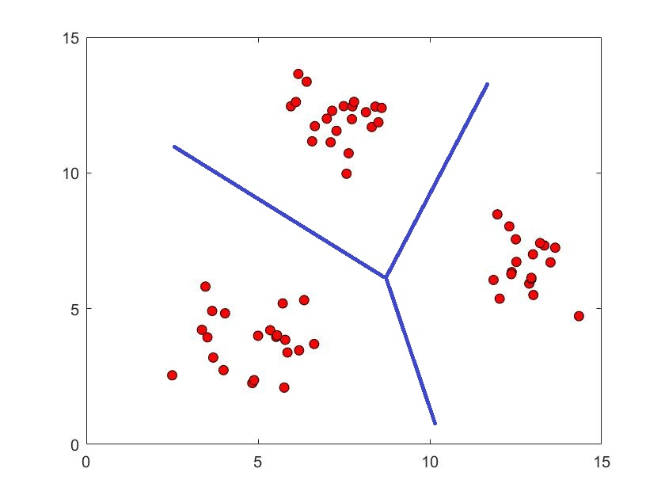
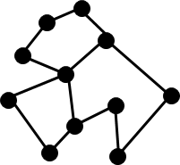
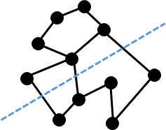
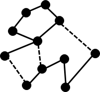

Unsupervised Learning
Unsupervised learning studies data without relying on known class labels. Clustering is one important unsupervised-learning technique. Here, we discuss two clustering methods:
K-Means
Spectral Clustering
We also examine their connections to graph partitioning and normalized cuts, which are useful in image segmentation.
K-Means Clustering
In k-means clustering, we seek k clusters among m data points. We assume that each data point is n-dimensional. For example, let the data points be \(\boldsymbol{x}^{(1)},\boldsymbol{x}^{(2)},\ldots,\boldsymbol{x}^{(m)}\), where \(\boldsymbol{x}^{(i)}\in\mathbb{R}^n\) for \(i=1,2,\ldots,m\).
As an example, consider \(k = 3, n = 2\) and \(m = 60\) points. The following figure illustrates this setting.

To identify the clusters, we seek \(k\) representative points, one for each cluster. Let \(\boldsymbol{\mu}^{(j)}\) denote the representative of the \(j^{th}\) cluster. We define a loss function as the sum of squared distances between the data points in each cluster and their representative. Minimizing this loss encourages compact clusters. The loss for cluster \(j\) is
\[L_{j} = \sum_{\forall i: \boldsymbol{x}^{(i)} \in j^{th} cluster} \| \boldsymbol{x}^{(i)} - \boldsymbol{\mu}^{(j)} \|^{2}\tag{31.1}\]
For a more precise formulation, introduce an indicator matrix with one row per data point and one column per cluster. Its entries are either 0 or 1. The \(ij^{th}\) entry of the matrix is 1 if the \(i^{th}\) data point is present in the \(j^{th}\) cluster and zero otherwise. Assuming each data point belongs to exactly one cluster, the entries in each row sum to 1.
The following is an illustration of an indicator matrix.
\(\begin{matrix} \:\;\;\;\;\;\;\; j=1 & j=2 & j=3 & j=4\:....&j=k \end{matrix}\)
\(\begin{matrix} i = 1 \\ i = 2 \\ \vdots \\ i=m \\ \end{matrix}\) \(\begin{bmatrix} 0 \;\;\;\;\; & 0 \;\;\;\;\; & 1 \;\;\;\;\; & 0 \;\;\;\;\; \cdots & 0 \\ 1 \;\;\;\;\; & 0 \;\;\;\;\; & 0 \;\;\;\;\; & 0 \;\;\;\;\; \cdots & 0 \\ \vdots & \vdots & \vdots & \ddots & \vdots \\ 0 \;\;\;\;\; & 0 \;\;\;\;\; & 1 \;\;\;\;\; & 0 \;\;\;\;\; \cdots & 0 \\ \end{bmatrix}\)
If \(a_{ij}\) is the \({ij}^{th}\) element of the matrix then,
\(a_{ij} = \begin{cases} 1, & \text{if $\boldsymbol{x}^{(i)}$ is in the $j^{th}$ cluster} \\ 0, & \text{otherwise} \\ \end{cases}\)
Because each row sums to 1, we have
\[\sum_{j=1}^{k} a_{ij} = 1\tag{31.2}\]
Let the number of data points in the \(j^{th}\) cluster as \(n_{j}\). We can see that,
\[n_{j} = \sum_{i=1}^{m} a_{ij}\tag{31.3}\]
With this notation for \(a_{ij}\) we can write the loss function \(L_{j}\) summed on all values of \(i\).
\[L_{j} = \sum_{i=1}^{m} a_{ij} \| \boldsymbol{x}^{(i)} - \boldsymbol{\mu}^{(j)} \|^{2}\tag{31.4}\]
More precisely, define \(a_{ij}\).
\[a_{ij} = \begin{cases} 1, & \underset{\text{all } \boldsymbol{x}^{(i)}}{\mathrm{argmin}} \| \boldsymbol{x}^{(i)} - \boldsymbol{\mu}^{(j)} \|^{2} \\ 0, & \text{otherwise} \\ \end{cases}\tag{31.5}\]
In the above definition of \(a_{ij}\), is calculated for every \(i\) and \(j\). For each value of \(i\) the distance to each cluster representative \(\boldsymbol{\mu}^{(j)}\) is calculated for each \(j\), and the minimum over all \(j\) is chosen and the corresponding value of \(j\) is associated to the point, thereby assigning the point to that cluster.
Next, we find the point \(\boldsymbol{\mu}^{(j)}\) by minimizing the loss within each cluster.
We can write equation (31.4) as follows:
\[L_{j} = \sum_{i=1}^{m} a_{ij} (\boldsymbol{x}^{(i)} - \boldsymbol{\mu}^{(j)})^{\top}(\boldsymbol{x}^{(i)} - \boldsymbol{\mu}^{(j)})\tag{31.6}\]
This can also be written as:
\[L_{j} = \sum_{i=1}^{m} a_{ij} (\boldsymbol{x}^{(i)\top}\boldsymbol{x}^{(i)} -2\boldsymbol{x}^{(i)\top} \boldsymbol{\mu}^{(j)}+ \boldsymbol{\mu}^{(j)\top}\boldsymbol{\mu}^{(j)})\tag{31.7}\]
To find the stationary points, we set the gradient with respect to \(\boldsymbol{\mu}^{(j)}\) to zero:
\[\nabla_{\boldsymbol{\mu}^{j}} L_{j} = 0\tag{31.8}\] Which implies: \[\sum_{i=1}^{m} a_{ij} (-2\boldsymbol{x}^{(i)}+ 2\boldsymbol{\mu}^{(j)}) = 0\tag{31.9}\]
This simplifies to: \[\sum_{i=1}^{m} a_{ij} \boldsymbol{\mu}^{(j)} = \sum_{i=1}^{m} a_{ij}\boldsymbol{x}^{(i)}\tag{31.10}\]
On the left-hand side, the summation index does not occur in \(\boldsymbol{\mu}^{(j)}\), so we can move it outside the summation:
\[\boldsymbol{\mu}^{(j)} \left( \sum_{i=1}^{m} a_{ij} \right) = \sum_{i=1}^{m} a_{ij}\boldsymbol{x}^{(i)}\tag{31.11}\]
Using equation (31.3) we have,
\[n_{j}\boldsymbol{\mu}^{*(j)} = \sum_{i=1}^{m} a_{ij}\boldsymbol{x}^{(i)}\tag{31.12}\]
Thus we finally have,
\[\boldsymbol{\mu}^{*(j)} = \frac{1}{n_{j}} \sum_{i=1}^{m} a_{ij}\boldsymbol{x}^{(i)}\tag{31.13}\]
To show that the stationary point is a minimum, we examine the Hessian.
\[\nabla_{\boldsymbol{\mu}^{j}}^{2} L_{j} = \nabla_{\boldsymbol{\mu}^{j}} \left(\sum_{i=1}^{m} a_{ij} (-2\boldsymbol{x}^{(i)}+ 2\boldsymbol{\mu}^{(j)})\right)= \sum_{i=1}^{m} 2a_{ij} \boldsymbol{I}\tag{31.14}\] This matrix is positive definite when the cluster is nonempty.
Let us now write down the algorithm for k-means.
Choose \(k\) arbitrary data points from the data points that we have. These k data points are considered as the initial representative points of the \(k\) clusters.
Use the definition of \(a_{ij}\) to find the points in each cluster.
Recalculate the representative points using equation (31.13).
Because each representative is updated to the mean of the points assigned to its cluster, the algorithm is called k-means.
Unnormalized Spectral Clustering
We begin by recalling the ingredients of unnormalized spectral clustering and then derive the algorithm. Unnormalized spectral clustering constructs an undirected graph from the dataset and uses its mathematical properties to identify clusters. The graph is constructed in a way that each data point corresponds to a node (or vertex) in the graph and the nodes are connected by edges weighted by a similarity measure between the two data points. The nodes are numbered in the same order as the data points, i.e. the \(k\)th data point forms the node \(k\).
The Similarity Matrix
To measure the similarity between two data points, it is common to use the Euclidean distance between the two data points. For Euclidean distance, we obtain a measure of dissimilarity, i.e. when the points are too close to each other we have the Euclidean distance very close to zero, and at zero the two points are the same. On the other hand, the distance is unbounded above. This can be inconvenient. The idea is therefore to limit the range of similarity measure, say an interval such as (0,1], where 0 indicates the utmost dissimilarity and 1 indicates equality between the two data points.
There are many possible similarity matrices. Here we use the Gaussian similarity measure
\[w_{ij} = e^{-\frac{\| \boldsymbol{x}^{(i)}-\boldsymbol{x}^{(j)} \|^2}{2 \sigma^2}}\tag{40.1}\]
where \(w_{ij}\) is the similarity between the \(i\)th and \(j\)th data points, and the \(i\)th and the \(j\)th data points are given by \(\boldsymbol{x}^{(i)}\) and \(\boldsymbol{x}^{(j)}\) respectively, and \(\sigma\) is a constant that decides the width of the Gaussian kernel. If nodes connected with smaller values of similarity measures are also to be considered, we increase the width of the Gaussian by changing the parameter \(\sigma\). In short, we choose the value of \(\sigma\) so as to fix a certain range of similarity measures as significant. This function is useful because it gives a value one when the two points are equal and as the dissimilarity increases, the distance between the two points increases and the function outputs a near zero value. Note that the above similarity measure provides the range (0,1] to indicate similarity.
The similarity matrix is formed by placing these \(w_{ij}\)’s in a matrix, i.e. each \(w_{ij}\) is placed in the \(ij\)th entry of the matrix. Thus, the similarity matrix is
\[W = \begin{bmatrix} w_{11} && w_{12} && w_{13} && \cdots && w_{1n} \\ w_{21} && w_{22} && w_{23} && \cdots && w_{2n} \\ w_{31} && w_{32} && w_{33} && \cdots && w_{3n} \\ \vdots && \vdots && \vdots && \ddots && \vdots \\ w_{n1} && w_{n2} && w_{n3} && \cdots && w_{nn} \\ \end{bmatrix}\tag{40.2}\]
The similarity formula gives diagonal entries equal to 1, because each node is similar to itself. But then we defined that each entry signifies the weight of the edge connecting a node to another. In an unweighted graph, we do not, by definition, have self loops, i.e. there are no edges in the graph that connect a node to itself, so we define \(w_{ii}=0\), which signifies the absence of self loops. Incorporating this additional definition, we now have the W matrix as follows.
\[W = \begin{bmatrix} 0 && w_{12} && w_{13} && \cdots && w_{1n} \\ w_{21} && 0 && w_{23} && \cdots && w_{2n} \\ w_{31} && w_{32} && 0 && \cdots && w_{3n} \\ \vdots && \vdots && \vdots && \ddots && \vdots \\ w_{n1} && w_{n2} && w_{n3} && \cdots && 0 \\ \end{bmatrix}\tag{40.3}\]
Equation (40.3) gives the complete Similarity matrix. The matrix W is symmetric, as the Graph is undirected, i.e. \(w_{ij} = w_{ji}\).
The Unnormalized Graph Laplacian
We now derive a useful quantity from the similarity matrix. Multiply this matrix by the vector \(\boldsymbol{1}\), defined as, \(\boldsymbol{1} = \begin{bmatrix} 1 && 1 && 1 && \cdots && 1 \end{bmatrix}^{\top}\) and get a new vector. Let us call each element in that vector as \(d_{i}\), corresponding to the \(i\)th row.
\[\begin{bmatrix} 0 && w_{12} && w_{13} && \cdots && w_{1n} \\ w_{21} && 0 && w_{23} && \cdots && w_{2n} \\ w_{31} && w_{32} && 0 && \cdots && w_{3n} \\ \vdots && \vdots && \vdots && \ddots && \vdots \\ w_{n1} && w_{n2} && w_{n3} && \cdots && 0 \\ \end{bmatrix} \begin{bmatrix} 1 \\ 1 \\ 1 \\ \vdots \\ 1 \\ \end{bmatrix} = \begin{bmatrix} d_{1} \\ d_{2} \\ d_{3} \\ \vdots \\ d_{n} \\ \end{bmatrix}\tag{40.4}\]
Each \(d_{j}\) represents the sum of weights incident on the node \(j\), i.e.
\[\sum_{\forall i, i\neq j} w_{ij} = d_{j}\tag{40.5}\]
Using these values \(d_{j}\), we form a diagonal matrix D in the following manner. \[\begin{bmatrix} d_{1} && 0 && 0 && \cdots && 0 \\ 0 && d_{2} && 0 && \cdots && 0 \\ 0 && 0 && d_{3} && \cdots && 0 \\ \vdots && \vdots && \vdots && \ddots && \vdots\\ 0 && 0 && 0 && \cdots && d_{n} \\ \end{bmatrix}\tag{40.6}\]
Define the unnormalized graph Laplacian by
\[L = D - W\tag{40.7}\] Its entries are
\[L = \begin{bmatrix} d_{1} && -w_{12} && -w_{13} && \cdots && -w_{1n} \\ -w_{21} && d_{2} && -w_{23} && \cdots && -w_{2n} \\ -w_{31} && -w_{32} && 0 && \cdots && -w_{3n} \\ \vdots && \vdots && \vdots && \ddots && \vdots \\ -w_{n1} && -w_{n2} && -w_{n3} && \cdots && d_{n} \\ \end{bmatrix}\tag{40.8}\]
Now observe that multiplying the vector \(\boldsymbol{1}\) with the matrix L gives us the vector \(\boldsymbol{0}\), which implies that \(\boldsymbol{1}\) is an eigenvector of L with 0 as the eigenvalue. This results directly from equation (40.5), i.e. \[d_{j} - \sum_{\forall i, i\neq j} w_{ij} = 0\tag{40.9}\]
The unnormalized Laplacian \(L\) is also symmetric. We can also show that \(L\) is positive semidefinite. To prove it, let us take a vector \(\boldsymbol{f}\), and try to check what \(\boldsymbol{f}^{\top}L\boldsymbol{f}\) yields to be. On substituting \(L = D-W\) in \(\boldsymbol{f}^{\top}L\boldsymbol{f}\), we get,
\[\boldsymbol{f}^{\top}L\boldsymbol{f} = \boldsymbol{f}^{\top}(D-W)\boldsymbol{f}= \boldsymbol{f}^{\top}D\boldsymbol{f} - \boldsymbol{f}^{\top}W\boldsymbol{f}\tag{40.10}\]
Now we have this above equation written as, \[\boldsymbol{f}^{\top}L\boldsymbol{f} = \sum_{i=1}^{N} \sum_{j=1}^{N} f_{i} d_{ij} f_{j} - \sum_{i=1}^{N} \sum_{j=1}^{N} f_{i} w_{ij} f_{j}\tag{40.11}\]
where \(d_{ij}\) is the \(ij\)th element of the matrix D. Now we have equation (40.11) to be written as below:
\[\boldsymbol{f}^{\top}L\boldsymbol{f} = \sum_{i=1}^{N} f^{2}_{i} d_{i} - \sum_{i=1}^{N} \sum_{j=1}^{N} f_{i} w_{ij} f_{j}\tag{40.12}\]
Now we use, \[d_{i} = \sum_{\forall j, j\neq i} w_{ij}\tag{40.13}\] and thus obtain,
\[\boldsymbol{f}^{\top}L\boldsymbol{f} = \sum_{i=1}^{N} \sum_{j=1}^{N} f^{2}_{i} w_{ij} - \sum_{i=1}^{N} \sum_{j=1}^{N} f_{i} w_{ij} f_{j}\tag{40.14}\]
we can write this above expression as,
\[\boldsymbol{f}^{\top}L\boldsymbol{f} = \frac{1}{2}\sum_{i=1}^{N} \sum_{j=1}^{N} f^{2}_{i} w_{ij} + \frac{1}{2}\sum_{i=1}^{N} \sum_{j=1}^{N} f^{2}_{j} w_{ij} - \sum_{i=1}^{N} \sum_{j=1}^{N} f_{i} w_{ij} f_{j}\tag{40.15}\]
Now we have, \[\boldsymbol{f}^{\top}L\boldsymbol{f} = \frac{1}{2}\sum_{i=1}^{N} \sum_{j=1}^{N} \left( f^{2}_{i} w_{ij} + f^{2}_{j} w_{ij} - 2f_{i}f_{j} w_{ij} \right) = \frac{1}{2}\sum_{i=1}^{N} \sum_{j=1}^{N} w_{ij}\left( f_{i} - f_{j} \right)^{2} \geqslant 0\tag{40.16}\] Therefore L is a positive semidefinite matrix.
Since we have seen that 0 is an eigenvalue of L (from equation (40.9)), and that L is positive semi-definite, we thus have, 0 is the smallest eigenvalue of L and the eigenvector corresponding to the smallest eigenvalue is \(\boldsymbol{1}\).
The spectrum of a matrix is the set of its eigenvalues. And the eigenvalue decomposition completely describes the spectrum of the matrix L. Now if we observe that if the data points form a cluster, i.e. some nodes are connected to only some other nodes and not all other nodes, then by numbering all the nodes in the same cluster in an order and then moving to the next cluster, we can get the matrix L to be of the following form.
\(\begin{bmatrix} \begin{pmatrix} \cdots && \cdots && \cdots \\ \vdots && L_{1} && \vdots \\ \cdots && \cdots && \cdots \\ \end{pmatrix} \\ &&\begin{pmatrix} \cdots && \cdots && \cdots \\ \vdots && L_{2} && \vdots \\ \cdots && \cdots && \cdots \\ \end{pmatrix} \\ &&&&\begin{matrix} \ddots && \cdots \\ \vdots && \ddots \\ \cdots && \cdots \\ \end{matrix} \\ &&&&&\begin{pmatrix} \cdots && \cdots && \cdots \\ \vdots && L_{k} && \vdots \\ \cdots && \cdots && \cdots \\ \end{pmatrix} \\ \end{bmatrix}\)
Observe that the above matrix is block diagonal matrix, it so turns out because the numbering of nodes was done according to the clusters. The numbering was so done that all elements in the same cluster were given consecutive positive integers. This may not always be how the matrix is obtained, but there are methods like k-means which can help us obtain such a matrix, however we will see that we need not reorder the entire matrix, only reordering the rows of the eigenvalues will suffice. Since \(\boldsymbol{1}\) is an eigenvector of L with eigenvalue 0, when the matrix is represented as above, we can see that even the matrices \(L_{1}, L_{2}, L_{3}, ..., L_{k}\) have their corresponding \(\boldsymbol{1}\) vectors as Eigenvectors each with eigenvalue 0. Therefore we can form k eigenvectors with ones in the index locations corresponding to \(L_{i}\) and set the rest of the elements to zero, from this we infer that the multiplicity of the eigenvalue 0 is \(k\). Now we also observe that there are \(k\) clusters in the graph. From all this it is evident that multiplicity of the eigenvalue 0 in the Unnormalized Laplacian Matrix gives the number of clusters in the data set. Each of the eigenvectors of the re-ordered Laplacian matrix looks like: \(\boldsymbol{1}_{m} = \begin{bmatrix} 0 \cdots 0 & 1 & 1 & \cdots & 1 & 1 & 0 & 0 & \cdots & 0 \end{bmatrix}^{\top}\). Now it is rarely the case that the matrix L is of the above form. The rows of the matrix might be very scattered and the eigenvectors may look something like, \(\boldsymbol{v}_{m} = \begin{bmatrix} 1 \cdots 0 & 0 & 1 & \cdots & 0 & 1 & 0 & 0 & \cdots & 0 \end{bmatrix}^{\top}\). Note that we have as many eigenvectors as there are the number of clusters and each eigenvector actually corresponds to a cluster. This is because, the entries of the eigenvector is 1 in all those rows where the corresponding pixel belongs to the cluster corresponding to the eigenvector. Now we use k-means algorithm to reorder the rows of the eigenvector matrix (matrix formed by stacking the eigenvectors column-wise). We store the indices of reordering in a column vector which records the cluster which each pixel belongs to.
Graph Cuts and Partitioning
Figure 1 shows a graph \(G\) with 11 vertices connected with 13 edges in some chosen fashion.

We now partition this graph into two parts. If we call one part of the Graph as \(A\), then the other part of the graph can be called \(\bar{A}\). In set notation we write it as: \(\bar{A} = V \backslash A\) We observe that \(A \cup \bar{A} = G\) and \(A \cap \bar{A} = \Phi\). We also know that \(A \subset G\) and that \(\bar{A} \subset G\). One possible partition is shown below.

In the Figure 2 shown above, each of the subgraph in the graph is again a graph. This cutting of a graph into two or more parts to generate subgraphs is called Partitioning. The blue line is referred to as a Graph Cut, hence this partitioning is also referred to as graph-cut method.
The resulting two subgraphs are shown in Figure 3.

The example of cutting a graph shown above is similar to dividing the data points into two different clusters. Thus we use graph cut algorithms in understanding clustering that we mentioned in the earlier subsections. Now let us define a parameter \(w(A,B)\), where \(A\) and \(B\) are two disjoint parts of a graph, as: \[w(A,B) = \sum_{i \in A} \sum_{j \in B} w_{i,j}\tag{40.17}\] Now we define a cut. Let us suppose that a Graph G is partitioned into \(k\) subgraphs each denoted by \(A_{i}\) for \(i=1,2,3,...k\), we define a cut as:
\[cut(A_{1}, A_{2},...,A_{k}) = \frac{1}{2} \left[ \sum_{i=1}^{k} w(A_{i},\bar{A_{i}}) \right]\tag{40.18}\]
In the specific case of two partitions, the value of a cut is:
\[cut(A,\bar{A}) = \frac{1}{2} \left[w\left( A,\bar{A} \right) + w\left( \bar{A},A \right) \right] = w\left( \bar{A},A \right)\tag{40.19}\]
We now define the ratio cut, which will be used in deriving the unnormalized spectral clustering algorithm in yet another way. We define a ratio cut of \(k\) partitions of a graph as follows:
\[ratio cut(A_{1},A_{2},...,A_{k}) = \sum_{i=1}^{k} \frac{w\left( A_{i},\bar{A_{i}} \right) }{\left|A_{i}\right|}\tag{40.20}\] where \(\left|A_{i}\right|\) is the number of vertices in \(A_{i}\).
Note that, \[\sum_{i=1}^{k} \left|A_{i} \right| = n\tag{40.21}\] where \(n\) is the total number of vertices. Using equation (40.19), we can also write equation (40.20) as:
\[ratio cut(A_{1},A_{2},...,A_{k}) = \sum_{i=1}^{k} \frac{cut\left( A_{i},\bar{A_{i}} \right) }{\left|A_{i}\right|}\tag{40.22}\]
Minimizing Ratio Cuts (Two Partitions)
Before going any further let us define a quantity called the indicator vector \(\boldsymbol{f} \in \mathbb{R}^{n}\), where \(n\) is the number of vertices in the Graph. Now each element in \(f_{i}\) takes a value \(\sqrt{\frac{\left| \bar{A} \right|}{\left| A \right|}}\) or \(-\sqrt{\frac{\left| A \right|}{\left| \overline{A} \right|}}\), depending on whether \(v_{i}\) belongs to \(A\) or \(\bar{A}\), where \(v_{i}\) is a node in the given graph \(G = A \cup \bar{A}\). We thus write \(f_{i}\) as follows:
\[f_{i} = \begin{cases} \sqrt{\frac{\left| \bar{A} \right|}{\left| A \right|}}, \textnormal{ if } v_{i} \in A \\ -\sqrt{\frac{\left| A \right|}{\left| \overline{A} \right|}}, \textnormal{ if } v_{i} \in \overline{A} \end{cases}\tag{40.23}\]
Observe that \(\left| A \right| + \left| \bar{A} \right| = n\).
Let us, for the sake of convenience, assume that, \(b = \sqrt{\frac{\left| \bar{A} \right|}{\left| A \right|}}\).
Now we have, equation (40.23) written as below:
\[f_{i} = \begin{cases} b, \textnormal{ if } \in v_{i} \in A \\ -\frac{1}{b}, \textnormal{ if } \in v_{i} \in \bar{A} \end{cases}\tag{40.24}\]
Let us derive a property with this \(b\) in the picture so as to make the later explanations easy.
Consider the expression \(\left( b + \frac{1}{b} \right)^{2}\).
\[\left( b + \frac{1}{b} \right)^{2} = \frac{(b^{2}+1)^{2}}{b^{2}}\tag{40.25}\]
Now substituting \(b\) in terms of \(\left|A\right|\) and \(\left|\bar{A}\right|\) we get,
\[\frac{(b^{2}+1)^{2}}{b^{2}} = \frac{\left(\left|A\right|+\left|\bar{A}\right|\right)^{2}}{\left|A\right|\left|\overline{A}\right|}\tag{40.26}\]
\[\frac{(b^{2}+1)^{2}}{b^{2}} = \frac{n\left(\left|A\right|+\left|\bar{A}\right|\right)}{\left|A\right|\left|\overline{A}\right|}\tag{40.27}\]
\[\frac{(b^{2}+1)^{2}}{b^{2}} = \frac{n}{\left|A\right|} + \frac{n}{\left|\overline{A}\right|}\tag{40.28}\]
Therefore, we have, \[\left(b+ \frac{1}{b} \right)^{2}= \frac{n}{\left|A\right|} + \frac{n}{\left|\overline{A}\right|}\tag{40.29}\]
We also see that,
\[b\left|A \right| - \frac{1}{b}\left|\bar{A}\right| = \sqrt{\left|A\right|\left|\bar{A}\right|}-\sqrt{\left|\bar{A}\right|\left|A\right|} = 0\tag{40.30}\]
Also we have, \[b^{2}\left|A\right| + \frac{1}{b^{2}}\left|\bar{A}\right| = n\tag{40.31}\]
Keeping these results aside, let us try to look at what happens if the indicator vector \(\boldsymbol{f}\) is used in calculating \(\boldsymbol{f}^{\top}L\boldsymbol{f}\).
We know from equation (40.16) that,
\[\boldsymbol{f}^{\top}L\boldsymbol{f} = \frac{1}{2}\sum_{i=1}^{n} \sum_{j=1}^{n} w_{ij}\left( f_{i} - f_{j} \right)^{2}\tag{40.32}\]
Now we write the above sum as two sums and add the two.
\[\boldsymbol{f}^{\top}L\boldsymbol{f} = \frac{1}{2} \left[ \sum_{i \in A} \sum_{j \in \bar{A}} w_{ij}\left( f_{i} - f_{j} \right)^{2} + \sum_{i \in \bar{A}} \sum_{j \in A} w_{ij}\left( f_{i} - f_{j} \right)^{2} \right]\tag{40.33}\]
\[\boldsymbol{f}^{\top}L\boldsymbol{f} = \frac{1}{2} \left[ \sum_{i \in A} \sum_{j \in \bar{A}} w_{ij}\left( b - \left( \frac{-1}{b} \right) \right)^{2} + \sum_{i \in \bar{A}} \sum_{j \in A} w_{ij}\left( \left( \frac{-1}{b} \right) - b \right)^{2} \right]\tag{40.34}\]
\[\boldsymbol{f}^{\top}L\boldsymbol{f} = \frac{1}{2} \left[ \sum_{i \in A} \sum_{j \in \bar{A}} w_{ij} + \sum_{i \in \bar{A}} \sum_{j \in A} w_{ij}\right] \left( b + \frac{1}{b}\right)^{2}\tag{40.35}\]
Now the above can be written as,
\[\boldsymbol{f}^{\top}L\boldsymbol{f} = cut(A,\bar{A})\left( b + \frac{1}{b}\right)^{2}\tag{40.36}\]
Substituting equation (40.29) in the above we get,
\[\boldsymbol{f}^{\top}L\boldsymbol{f} = n\left(\frac{cut(A,\bar{A})}{\left|A\right|} + \frac{cut(A,\bar{A})}{\left|\overline{A}\right|}\right)= n(ratiocut(A,\bar{A}))\tag{40.37}\]
So we finally have, \[\frac{\boldsymbol{f}^{\top}L\boldsymbol{f}}{n} = Ratio Cut(A,\bar{A})\tag{40.38}\]
Therefore, the ratio cut depends on the indicator vector \(\boldsymbol{f}\). Now let us try to physically interpret from the definition of ratio cuts. A ratio cut indicates the average weight connectivity of two graphs. It can be treated as how two partitions of the graphs are connected. Now if we minimize the ratio cut, it indicates partitioning of graphs into parts that are least connected. So the entire problem of partitioning the graph into two parts connected with the least connected weights can be reduced to minimizing the expression \(\boldsymbol{f}^{\top}L\boldsymbol{f}\).
We now examine the properties of \(\boldsymbol{f}\),
\(\boldsymbol{f}^{\top}\boldsymbol{1} = 0\) \[\boldsymbol{f}^{\top}\boldsymbol{1} =\sum_{i=1}^{n} f_{i}\tag{40.39}\]
Now the above expression can be written in two parts: \[\boldsymbol{f}^{\top}\boldsymbol{1} =\sum_{i\in A} f_{i} + \sum_{j \in \bar{A}} f_{j}\tag{40.40}\]
Using the expression in (40.24) we have,
\[\boldsymbol{f}^{\top}\boldsymbol{1} =\sum_{i\in A} b + \sum_{j \in \bar{A}} \left(\frac{-1}{b}\right)\tag{40.41}\]
This simplifies to:
\[\boldsymbol{f}^{\top}\boldsymbol{1} = b \left|A\right| + \left|\bar{A}\right| \left(\frac{-1}{b}\right) = b\left|A\right| - \frac{1}{b}\left|\bar{A}\right|\tag{40.42}\] Using equation (40.30) in the above equation we finally get, \[\boldsymbol{f}^{\top}\boldsymbol{1} = b\left|A\right| - \frac{1}{b}\left|\bar{A}\right| = 0\tag{40.43}\]
\(\|\boldsymbol{f}\|^{2} = \boldsymbol{f}^{\top}\boldsymbol{f}\) \[\|\boldsymbol{f}\|^{2} = \boldsymbol{f}^{\top}\boldsymbol{f} = \sum_{i=1}^{n} f_{i}^{2}\tag{40.44}\]
\[\|\boldsymbol{f}\|^{2} = \boldsymbol{f}^{\top}\boldsymbol{f} = \sum_{i \in A} f_{i}^{2} + \sum_{j \in \bar{A}} f_{j}^{2}\tag{40.45}\]
\[\|\boldsymbol{f}\|^{2} = \boldsymbol{f}^{\top}\boldsymbol{f} = \sum_{i \in A} b^{2} + \sum_{j \in \bar{A}} \left( \frac{1} {b}\right)^{2}\tag{40.46}\]
\[\|\boldsymbol{f}\|^{2} =\left|A\right| b^{2} + \left|\bar{A}\right| \left( \frac{1} {b}\right)^{2}\tag{40.47}\]
Using (40.31), the equation becomes \[\|\boldsymbol{f}\| = \sqrt{n}\tag{40.48}\]
We however use the following equation in modifying the expression for ratio cuts.
\[\boldsymbol{f}^{\top}\boldsymbol{f} = n\tag{40.49}\]
So the equation of ratio cut modifies to:
\[\frac{\boldsymbol{f}^{\top}L\boldsymbol{f}}{\boldsymbol{f}^{\top}\boldsymbol{f}} = Ratio Cut(A,\bar{A})\tag{40.50}\]
Finally, we formulate the problem of minimization of the ratio cut as follows:
\[\underset{A \subset G}{min} RatioCut(A,\bar{A}) \iff \underset{\boldsymbol{f} \in \mathbb{R}^{n}}{min} \frac{\boldsymbol{f}^{\top}L\boldsymbol{f}}{\boldsymbol{f}^{\top}\boldsymbol{f}}\tag{40.51}\]
In the above minimization problem, the vector \(\boldsymbol{f}\) is subjected to:
\(\boldsymbol{f}^{\top}\boldsymbol{1} = 0\)
\(f_{i} = \begin{cases} \sqrt{\frac{\left| \bar{A} \right|}{\left| A \right|}}, \textnormal{ if } v_{i} \in A \\ -\sqrt{\frac{\left| A \right|}{\left| \overline{A} \right|}}, \textnormal{ if } v_{i} \in \overline{A}\\ \end{cases}\)
Now combining the first constraint into the minimization problem and relaxing the second constraint, we get the following as the new minimization problem.
\[\underset{\boldsymbol{f} \in \mathbb{R}^{n},\boldsymbol{f}^{\top}\boldsymbol{1}=0}{min} \frac{\boldsymbol{f}^{\top}L\boldsymbol{f}}{\boldsymbol{f}^{\top}\boldsymbol{f}}\tag{40.52}\]
By the Rayleigh–Ritz theorem that the eigenvector corresponding to the smallest eigenvalue solves the above minimization problem when the constraint \(\boldsymbol{f}^{\top}\boldsymbol{1}=0\) is not present. Now when the constraint is present, we have 0 as the smallest eigenvalue of L, since L is positive semidefinite, and the corresponding eigenvector is \(\boldsymbol{1}\). Since the possibility of the eigenvector corresponding to the smallest eigenvalue is consumed, we take the eigenvector corresponding to the second smallest eigenvalue. And that minimizes the entire expression. Therefore the eigenvector corresponding to the second smallest eigenvalue divides the Graph into two partitions.
Ratio Cuts for Multiple Partitions
Consider the case of dividing the graph into \(k\) partitions, i.e. the data points that were formed into a graph are to be clustered into \(k\) clusters. In the previous section we have looked into the case of two clusters, i.e.\(k = 2\). Let the clusters be \(A_{1}, A_{2}, ..., A_{k}\), such that \(A_{i} \cap A_{j} = \Phi\) and \(\bigcup\limits_{i=1}^{k}A_{i}=A\). We now define \(\boldsymbol{h_{j} \in \mathbb{R}^{n}}\) in such a way that,
\[h_{ij} = \begin{cases} \frac{1}{\sqrt{\left|A_{j}\right|}} \textnormal{ if } \boldsymbol{v_{i}} \in A_{j} \\ 0, \textnormal{ otherwise} \\ \end{cases}\tag{40.53}\] where \(j=1,2,3,...,k\), that is each \(\boldsymbol{h_{j}}\) corresponds to a cluster. The non-zero entries of \(\boldsymbol{h_{j}}\) indicate presence of the corresponding components (indicated by the index) in the cluster \(j\).
Now let us consider the expression \(\boldsymbol{h_{j}}^{\top}L\boldsymbol{h_{j}}\). Ignoring normalizing constant \(\frac{1}{\sqrt{\left|A_{j}\right|}}\) for the time being, let us create a new vector \(\boldsymbol{\bar{h}_{j}} = \sqrt{\left|A_{j}\right|} \boldsymbol{h_{j}}\) , and thus examine \(\boldsymbol{\bar{h}_{j}}^{\top}L\boldsymbol{\bar{h}_{j}}\)
Now when there is a 1 in the entry of \(\boldsymbol{\bar{h}_{j}}\), we select that row of L and all similarly select all other rows of L where the corresponding entry in \(\boldsymbol{\bar{h}_{j}}\) is 1. This summarizes the operation \(\boldsymbol{\bar{h}_{j}}^{\top}L\). Now when we post multiply by \(\boldsymbol{\bar{h}_{j}}\), we find that we get an expression where the weights of all nodes within the graph are subtracted from the sum of all weights in the graph. This basically gives the value of \(cut(A_{i},\bar{A}_{i})\).
As an example let us consider \[\bar{\boldsymbol{h_{j}}} = \begin{bmatrix} 1 \\ 1 \\ 0 \\ \vdots \\ 0 \\ \end{bmatrix}\tag{40.54}\]
\[\bar{\boldsymbol{h_{j}}}^{\top}L\bar{\boldsymbol{h_{j}}} = \begin{bmatrix} 1 && 1 && 0 && \cdots && 0 \\ \end{bmatrix} \begin{bmatrix} d_{1} && -w_{12} && -w_{13} && \cdots && -w_{1n} \\ -w_{21} && d_{2} && -w_{23} && \cdots && -w_{2n} \\ -w_{31} && -w_{32} && 0 && \cdots && -w_{3n} \\ \vdots && \vdots && \vdots && \ddots && \vdots \\ -w_{n1} && -w_{n2} && -w_{n3} && \cdots && d_{n} \\ \end{bmatrix} \begin{bmatrix} 1 \\ 1 \\ 0 \\ \vdots \\ 0 \\ \end{bmatrix}\tag{40.55}\]
\[\bar{\boldsymbol{h_{j}}}^{\top}L\bar{\boldsymbol{h_{j}}} = d_{1} + d_{2} - w_{12} - w_{21} = (d_{1}-w_{12}) + (d_{2}-w_{21})\tag{40.56}\]
Now this summing up of weights incident on a node is what we refer to as a cut. So finally we see that \(\boldsymbol{h_{j}}^{\top}L\boldsymbol{h_{j}}\) is the sum of cuts divided by the factor \(\left|A_{j}\right|\). This is simply the value of ratio cut. Now we want to minimize the sum of all the terms, i.e. terms obtained by putting \(j=1,2,3,..\), now again by Rayleigh Ritz theorem, we can say that the eigenvectors corresponding to the smallest k-eigenvalues will minimize the sum.
Normalized Spectral Clustering
Normalized Spectral Clustering for Two Partitions
Having derived unnormalized spectral clustering, we now turn to normalized spectral clustering. We thus define a term called the Normalized Cuts of a graph before we proceed any further. Define the normalized cut, denoted by ncut.
\[ncut(A_{1},A_{2},...,A_{k}) = \sum_{i=1}^{k} \frac{w(A_{i},\bar{A}_{i})}{vol(A_{i})} = \sum_{i=1}^{k} \frac{cut(A_{i},\bar{A}_{i})}{vol(A_{i})}\tag{41.1}\]
where \[vol(A) = \sum_{i \forall i \in A} d_{i}\tag{41.2}\] is called the Volume of a subgraph \(A\) and is the sum of all the weights of the edges in the graph.
Similar to the previous algorithm, in this algorithm we try to minimize the Normalized cut rather than the Ratio cut. Let us start by defining elements in the indicator vectors:
\[f_i = \begin{cases} \sqrt{\frac{Vol(\bar{A})}{Vol(A)}},\textnormal{ if } v_{i} \in A \\ -\sqrt{\frac{Vol(A)}{Vol(\bar{A})}},\textnormal{ if } v_{i} \in \bar{A} \\ \end{cases}\tag{41.3}\]
Therefore when the vector is viewed as a whole, we have a representation similar to the following depending on which node belongs to which part of the graph.
\[\boldsymbol{f} = \begin{bmatrix} f_{1}\\ f_{2}\\ \vdots\\ f_{n}\\ \end{bmatrix} = \begin{bmatrix} \sqrt{\frac{Vol(\bar{A})}{Vol(A)}} \\ -\sqrt{\frac{Vol(A)}{Vol(\bar{A})}} \\ \vdots\\ \sqrt{\frac{Vol(\bar{A})}{Vol(A)}}\\ \end{bmatrix}\tag{41.4}\]
Observe that the indicator vectors are of the size \(n \times 1\) where \(n\) is the number of nodes in the graph. Now let us look at what happens when we multiply the degree graph by the above indicator vector.
Let us now observe the various properties of the vector \(D\boldsymbol{f}\).
It can be written as:
\[\left(D\boldsymbol{f}^{\top}\right)\boldsymbol{1} =\sum_{i\in A} d_{ii}f_{i} + \sum_{j \in \bar{A}} d_{jj}f_{j}\tag{41.5}\]
Observing that \(\sum_{i\in A} d_{ii}=Vol(A)\) and \(\sum_{i\in A} d_{ii}=Vol(\bar{A})\), and substituting \(\boldsymbol{f}_{i} = \sqrt{\frac{Vol(\bar{A})}{Vol(A)}} \forall i \in A\) and \(\boldsymbol{f} = \sqrt{-\frac{Vol(A)}{Vol(\bar{A})}} \forall i \in \bar{A}\) in the above equation we get,
\[\left(D\boldsymbol{f}^{\top}\right)\boldsymbol{1} =\sum_{i\in A_{j}} d_{ii}f_{i} + \sum_{j \in \bar{A}} d_{jj}f_{j} = \sqrt{Vol(A)Vol(\bar{A})}-\sqrt{Vol(\bar{A})Vol(A)} = 0\tag{41.6}\]
Similarly we can see that, we get, \[\boldsymbol{f}^{\top}D\boldsymbol{f} = vol(A)\left(\sqrt{\frac{vol(\bar{A})}{Vol(A)}}\right)^{2} + vol(\bar{A})\left(\sqrt{\frac{vol(A)}{Vol(\bar{A})}}\right)^{2} = Vol(A) + Vol(\bar{A}) = Vol(V)\tag{41.7}\]
Next, consider the quadratic form \(\boldsymbol{f}^{\top}L\boldsymbol{f}\). From a previous lecture we have:
\[\boldsymbol{f}^{\top}L\boldsymbol{f} = \frac{1}{2}\sum_{i=1}^{N} \sum_{j=1}^{N} \left( f^{2}_{i} w_{ij} + f^{2}_{j} w_{ij} - 2f_{i}f_{j} w_{ij} \right) = \frac{1}{2}\sum_{i=1}^{N} \sum_{j=1}^{N} w_{ij}\left( f_{i} - f_{j} \right)^{2}\tag{41.8}\]
Now we write the above sum as two sums and add the two.
\[\boldsymbol{f}^{\top}L\boldsymbol{f} = \frac{1}{2} \left[ \sum_{i \in A} \sum_{j \in \bar{A}} w_{ij}\left( f_{i} - f_{j} \right)^{2} + \sum_{i \in \bar{A}} \sum_{j \in A} w_{ij}\left( f_{i} - f_{j} \right)^{2} \right]\tag{41.9}\]
The term \((f_{i}-f_{j})^{2}\) is same in the two sums because of the presence of the squaring expression. In either of the case the square of the difference can be evaluated as:
\[(f_{i}-f_{j})^{2} = \left(\sqrt{\frac{Vol(\bar{A})}{Vol(A)}} + \sqrt{\frac{Vol(A)}{Vol(\bar{A})}}\right)^{2} = \left( \frac{Vol(V)}{\sqrt{Vol(A)Vol(\bar{A})}} \right)^{2} = \frac{Vol(V)Vol(V)}{Vol(A)Vol(\bar{A})}\tag{41.10}\]
Therefore, \[(f_{i}-f_{j})^{2} = \frac{Vol(V)}{Vol(A)} + \frac{Vol(V)}{Vol(\bar{A})} = Vol(V)\left(\frac{1}{Vol(A)} + \frac{1}{Vol(\bar{A})}\right)\tag{41.11}\]
\[\boldsymbol{f}^{\top}L\boldsymbol{f} = \frac{1}{2} \left[ \sum_{i \in A} \sum_{j \in \bar{A}} w_{ij} + \sum_{i \in \bar{A}} \sum_{j \in A} w_{ij}\right] Vol(V)\left(\frac{1}{Vol(A)} + \frac{1}{Vol(\bar{A})}\right)\tag{41.12}\]
We know that, \[\frac{1}{2} \left[ \sum_{i \in A} \sum_{j \in \bar{A}} w_{ij} + \sum_{i \in \bar{A}} \sum_{j \in A} w_{ij}\right] = cut(A,\bar{A})\tag{41.13}\]
\[\boldsymbol{f}^{\top}L\boldsymbol{f} = Vol(V)\left(\frac{cut(A,\bar{A})}{Vol(A)} + \frac{cut(A,\bar{A})}{Vol(\bar{A})}\right)\tag{41.14}\]
\[ncut(A,\bar{A}) = \left(\frac{cut(A,\bar{A})}{Vol(A)} + \frac{cut(A,\bar{A})}{Vol(\bar{A})}\right)\tag{41.15}\]
\[\boldsymbol{f}^{\top}L\boldsymbol{f} = Vol(V) ncut(A,\bar{A})\tag{41.16}\]
\[ncut(A,\bar{A}) =\frac{\boldsymbol{f}^{\top}L\boldsymbol{f}}{Vol(V)}\tag{41.17}\]
Now we formulate the minimization problem as minimizing \(ncut(A,\bar{A})\) over \(A\), which is again the following problem:
\[min\textnormal{\quad} \boldsymbol{f}^{\top}L\boldsymbol{f} \textnormal{ such that } \boldsymbol{f} \textnormal{ given as per (41.3) and } \left(D\boldsymbol{f}\right)^{\top}\boldsymbol{1}=0 \textnormal{ and } \boldsymbol{f}^{\top}D\boldsymbol{f} = Vol(V)\tag{41.18}\]
Now we can write one of the constraint as \(\boldsymbol{f}^{\top}D^{\frac{1}{2}}D^{\frac{1}{2}}\boldsymbol{f} = Vol(V)\). We now write \(g=D^{\frac{1}{2}}\boldsymbol{f}\).
With this new convention we can write the minimization problem as finding \(\boldsymbol{g} \in \mathbb{R}^{n}\) \[\textnormal{min}\quad\boldsymbol{g}^{\top}D^{\frac{-1}{2}}LD^{\frac{-1}{2}}\boldsymbol{g} \quad \textnormal{ s.t. } \boldsymbol{g}^{\top}\boldsymbol{g} = Vol(V)\tag{41.19}\]
Now we assume \(L_{symm}= D^{\frac{-1}{2}}LD^{\frac{-1}{2}}\)
\[\textnormal{min}\quad\boldsymbol{g}^{\top}L_{symm}\boldsymbol{g} \quad \textnormal{ s.t. } \boldsymbol{g}^{\top}\boldsymbol{g} = Vol(V)\tag{41.20}\]
Now to minimize the expression we choose the vector \(\boldsymbol{g}\) as the eigenvector corresponding to the second smallest eigenvalue of \(L_{symm}\).
This can also be seen as the solution to the generalized eigenvalue problem:
\[L\boldsymbol{f} = \lambda D\boldsymbol{f}\tag{41.21}\]
Normalized Spectral Clustering for \(k\) Partitions
Let us start by defining an element in the indicator vector in the case of \(k\) graph partitions.
\[h_{ij} = \begin{cases} \frac{1}{\sqrt{Vol(A_{j})}}, \textnormal{ if } v_{j} \in A_{j} \\ \textnormal{ \quad }0, \textnormal{\qquad otherwise}\\ \end{cases}\tag{41.22}\]
So now the indicator vector appears something like below:
\[\boldsymbol{h_{j}} = \begin{bmatrix} h_{ij}\\ h_{2j}\\ \vdots\\ h_{nj}\\ \end{bmatrix} = \begin{bmatrix} \frac{1}{\sqrt{Vol(A_{j})}} \\ 0 \\ 0 \\ \vdots \\ \frac{1}{\sqrt{Vol(A_{j})}} \\ \end{bmatrix}\tag{41.23}\]
Now let us look at what will happen when we pre-multiply (the transpose of the indicator vector) and post-multiply the above indicator vector with the degree matrix \(D\). We know that the degree matrix is a diagonal matrix each containing the sum of weights of incident on a node.
\[\boldsymbol{h}_{j}^{\top}D\boldsymbol{h}_{j} = \sum_{i=1}^{n} d_{i}h^{2}_{ij} = \sum_{\forall i,v_{i} \in A_{j}} \frac{d_{ij}}{vol(A_{j})} = \frac{\sum_{\forall i,v_{i} \in A_{j}}d_{ij}}{vol(A_{j})} = 1\tag{41.24}\]
This expression equals one because the summation of the weights incident on each node in the graph \(A_{k}\) adds up to the value \(vol(A_{k})\), recall that this expression was evaluated by adding the weights incident on each node of the graph in consideration. Now let us consider the same operation above with the Laplacian matrix \(L\).
\[\boldsymbol{h}_{j}^{\top}L\boldsymbol{h}_{j} = \sum_{i=1}^{n}\sum_{k=1}^{n} h_{ij}L_{ik}h_{kj}\tag{41.25}\]
Now for a given subgraph \(A_{j}\) we have some \(h_{rj}\)s equaling zero, that will multiply \(L_{ik}\) and the corresponding terms vanish. Consider the case of all such \(m\) such that \(h_{mj}\) is non-zero, all such terms will give non-zero terms in the final expression only when other element \(h_{nj}\) (for all such \(n\)) is also non-zero. This means that for all pairs \((m,n)\) where \(h_{mj}\) and \(h_{nj}\) are non-zero, we will have non-zero contributions towards the final expression. One such case is when \(m=n\). All other cases are when the vertices \(v_{m}\) and \(v_{n}\) belong to the subgraph under consideration, this is because when both of them belong to the same subgraph the corresponding \(h_{mj}\) and \(h_{nj}\) are non-zero simultaneously and thus they give a non-zero contribution to the final expression. Thus we have:
\[\boldsymbol{h}_{j}^{\top}L\boldsymbol{h}_{j} = \frac{1}{vol(A_{j})}\left[\sum_{i \textnormal{ s.t. } v_{i} \in A_{j}}^{n} L_{ii} + \sum_{i,j \textnormal{ s.t. }v_{i},v_{j} \in A_{j}} L_{ij}\right]\tag{41.26}\]
In the above equation the first summation becomes the sum of the diagonal elements for nodes in the subgraph \(A_{j}\) and the second term comprises of the sum of the negatives of the weights connecting vertices \(v_{i}\) and \(v_{j}\). Now when the total expression is evaluated the weights connecting the internal nodes of the subgraph are subtracted from the sum total of all the nodes of the subgraph. Thus what remains is the sum total of the weights connecting the subgraph \(A_{j}\) and \(\bar{A}_{j}\). This is called the \(cut(A_{j},\bar{A}_{j})\).
\[\boldsymbol{h}_{j}^{\top}L\boldsymbol{h}_{j} = \frac{cut(A_{j},\bar{A}_{j})}{vol(A_{j})}\tag{41.27}\]
It remains to minimize the value of \(ncut(A_{1}, A_{2},...,A_{n})\).
Therefore,
\[ncut(A_{1}, A_{2},...,A_{n}) = \sum_{j=1}^{n} \boldsymbol{h}_{j}^{\top}L\boldsymbol{h}_{j}\tag{41.28}\]
Define a matrix \(H\) such that:
\[H= \begin{bmatrix} \boldsymbol{h}_{1} && \boldsymbol{h}_{2} && \cdots && \boldsymbol{h}_{n} \end{bmatrix}\tag{41.29}\] where \(\boldsymbol{h}_{k} \in \mathbb{R}^{n}\) and thus \(H \in \mathbb{R}^{n\times n}\).
Now we can formulate the above minimization problem as the minimization of the trace of the matrix \(H^{\top}LH\). Now let us formulate the constraint for the minimization problem.
Before going any further let us observe some more facts. Let us make a small change in (41.7) to form the following expression: \(\boldsymbol{h}_{i}^{\top}D\boldsymbol{h}_{j}\). Now to evaluate this expression we use the fact that \(\boldsymbol{h}_{i}\) is orthogonal to \(\boldsymbol{h}_{j}\) for different values of \(i\) and \(j\). These two vectors turn out to be orthogonal because of the property that a node in the graph cannot be contained in two different subgraphs, thus resulting in different non-zero elements present in different vectors, now we can observe that on multiplying D and \(\boldsymbol{h}_{j}\), we get each element of \(\boldsymbol{h}_{j}\) scaled by each diagonal entry, this is because the multiplication produces a linear combination of the columns of D where the multiplying coefficient of each column in D is the corresponding element of the vector \(\boldsymbol{h}_{j}\), since zero elements in the vector give no contribution towards the end multiplication result, only the diagonal elements which correspond to nonzero entries are scaled and all these when added, only result in a element-wise scaled version of each element in \(\boldsymbol{h}_{j}\). Now from this, it follows that the zero-entries have not been disturbed so the vector \(D\boldsymbol{h}_{j}\) is also orthogonal to \(\boldsymbol{h}_{i}\). Thus we have: \[\boldsymbol{h}_{i}^{\top}D\boldsymbol{h}_{j} = 0\tag{41.30}\] for different values of \(i\) and \(j\).
From (41.7) and (41.13) we have:
\[\begin{bmatrix} \boldsymbol{h}_{1}^{\top}D\boldsymbol{h}_{1} && \boldsymbol{h}_{1}^{\top}D\boldsymbol{h}_{2} && \boldsymbol{h}_{1}^{\top}D\boldsymbol{h}_{3} && \cdots && \boldsymbol{h}_{1}^{\top}D\boldsymbol{h}_{n} \\ \boldsymbol{h}_{2}^{\top}D\boldsymbol{h}_{1} && \boldsymbol{h}_{2}^{\top}D\boldsymbol{h}_{2} && \boldsymbol{h}_{2}^{\top}D\boldsymbol{h}_{3} && \cdots && \boldsymbol{h}_{2}^{\top}D\boldsymbol{h}_{n} \\ \boldsymbol{h}_{3}^{\top}D\boldsymbol{h}_{1} && \boldsymbol{h}_{3}^{\top}D\boldsymbol{h}_{2} && \boldsymbol{h}_{3}^{\top}D\boldsymbol{h}_{3} && \cdots && \boldsymbol{h}_{3}^{\top}D\boldsymbol{h}_{n} \\ \vdots && \vdots && \vdots && \ddots && \vdots \\ \boldsymbol{h}_{n}^{\top}D\boldsymbol{h}_{1} && \boldsymbol{h}_{n}^{\top}D\boldsymbol{h}_{2} && \boldsymbol{h}_{n}^{\top}D\boldsymbol{h}_{3} && \cdots && \boldsymbol{h}_{n}^{\top}D\boldsymbol{h}_{n} \\ \end{bmatrix} = \begin{bmatrix} 1 && 0 && 0 && \cdots && 0 \\ 0 && 1 && 0 && \cdots && 0 \\ 0 && 0 && 1 && \cdots && 0 \\ \vdots && \vdots && \vdots && \ddots && \vdots \\ 0 && 0 && 0 && \cdots && 1 \\ \end{bmatrix} = \boldsymbol{I}\tag{41.31}\]
The above can therefore be written as, \[\begin{bmatrix} \boldsymbol{h_{1}}^{\top} \\ \boldsymbol{h_{2}}^{\top} \\ \boldsymbol{h_{3}}^{\top} \\ \vdots \\ \boldsymbol{h_{n}}^{\top} \\ \end{bmatrix} \begin{bmatrix} D\boldsymbol{h}_{1} && D\boldsymbol{h}_{2} && D\boldsymbol{h}_{3} && \cdots && D\boldsymbol{h}_{n} \\ D\boldsymbol{h}_{1} && D\boldsymbol{h}_{2} && D\boldsymbol{h}_{3} && \cdots && D\boldsymbol{h}_{n} \\ D\boldsymbol{h}_{1} && D\boldsymbol{h}_{2} && D\boldsymbol{h}_{3} && \cdots && D\boldsymbol{h}_{n} \\ \vdots && \vdots && \vdots && \ddots && \vdots \\ D\boldsymbol{h}_{1} && D\boldsymbol{h}_{2} && D\boldsymbol{h}_{3} && \cdots && D\boldsymbol{h}_{n} \\ \end{bmatrix} = \boldsymbol{I}\tag{41.32}\]
The above then becomes, \[\begin{bmatrix} \boldsymbol{h_{1}}^{\top} \\ \boldsymbol{h_{2}}^{\top} \\ \boldsymbol{h_{3}}^{\top} \\ \vdots \\ \boldsymbol{h_{n}}^{\top} \\ \end{bmatrix} D \begin{bmatrix} \boldsymbol{h}_{1} && \boldsymbol{h}_{2} && \cdots && \boldsymbol{h}_{n} \end{bmatrix} = \boldsymbol{I}\tag{41.33}\] Therefore in compact form the we have, \[H^{\top}DH = \boldsymbol{I}\tag{41.34}\]
Now let us write the above expression in the following form: \[H^{\top}D^{\frac{1}{2}}D^{\frac{1}{2}}H = \boldsymbol{I}\tag{41.35}\] Assuming \(T = D^{\frac{1}{2}}H\), we have,
\[T^{\top}T = \boldsymbol{I}\tag{41.36}\]
Now the optimization problem reduces to the minimization of \(trace(H^{\top}LH)\) under the constraint that \(T^{\top}T = \boldsymbol{I}\). Now we can convert the objective function in terms of the variables in the constraint so that we get a familiar form. So the problem can be posed as:
\[min \textnormal{\quad} trace (T^{\top}D^{-\frac{1}{2}}LD^{-\frac{1}{2}}T) \textnormal{ such that } T^{\top}T = \boldsymbol{I}\tag{41.37}\]
Now assuming \(D^{-\frac{1}{2}}LD^{-\frac{1}{2}}=Y\), we have the minimization problem as:
\[min \textnormal{\quad} trace (T^{\top}YT) \textnormal{ such that } T^{\top}T = \boldsymbol{I}\tag{41.38}\]
Now assuming \(\boldsymbol{t}_{i}\)s as the column vectors in the matrix T, the above problem can be written as: \[min \quad \sum_{j=1}^{n} \boldsymbol{t}_{j}^{\top}Y\boldsymbol{t}_{j} \textnormal{ such that } \boldsymbol{t}_{j}^{\top}\boldsymbol{t}_{j} = 1\tag{41.39}\]
This can be easily seen that the \(k\) eigenvectors corresponding to the minimum \(k\) eigenvalues of matrix \(D^{-\frac{1}{2}}LD^{-\frac{1}{2}}\) correctly fit in minimization of the above problem.